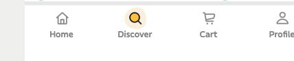

QA-01Hero, address and search


Visual QA · food delivery app
Comparison of the Discover default state against the supplied Penpot reference. The report isolates confirmed differences in structure, geometry, typography, color, and component treatment.
Each row below uses direct, unmodified pixel crops from the supplied Penpot capture and the matched app capture. Every expected/actual pair is presented side by side, and rows run from top to bottom in screen order.





These above-the-fold changes alter the intended first impression and control affordance.
| Property | Expected | Actual |
|---|---|---|
| Hero fill | #ffc042 | #ffcf68 |
| Address/search radius | 999px pill | 10px / 12px |
| Greeting left / paragraph top | 16px / 4px | 24px / 12px |
| Search placeholder | #838486 | #b1b2b5 |
| Decorative effects | Visible curve; no added shadows | Curve hidden; address and search shadows added |
Fix: restore the base hero and input tokens, original spacing, and the visible header curve.
| Property | Expected | Actual |
|---|---|---|
| Top-restaurants heading | 700 | 500 |
| Arrow button | neutral filled circle | transparent |
| Info icon | 16px | 12px |
| Discover nav | black active label | muted label |
| Newcomers subtitle | muted, regular | ink, 500 |
Fix: restore the supplied hierarchy and navigation-state tokens.
| Property | Expected | Actual |
|---|---|---|
| Card radius / padding | 16px / 16px | 6px / 10px |
| Rank type | 28px | 24px |
| Restaurant logo | 16px corners | circular |
| Promo badge | 8px corners | circular |
| Card shadow | none | 3px offset shadow |
Fix: apply the reference card, logo, badge and typography measurements.
| Property | Expected | Actual |
|---|---|---|
| Card treatment | 16px corners; shared soft shadow | 3px corners; heavy custom shadow |
| Image/card curve | visible | hidden |
| Product cards | rotated with subtle border | rotation removed; border hidden; added shadow |
Fix: use the normal tall-card recipe and keep the individual product transforms.
| Property | Expected | Actual |
|---|---|---|
| Grid gaps | 7.9779px | 12px |
| Tile corners | 16px; featured 24px | 3px |
| Avatar stack | circular, -4px overlap | 5px corners, +3px separation |
| Price badge | 4px radius, compact padding | pill with 9px horizontal padding |
Fix: restore the supplied grid rhythm, tile radii, and overlapping circular avatars.
| Property | Expected | Actual |
|---|---|---|
| Store-image corners | 16px | 30px |
| Store-image shadow | none | added 0 5px 7px shadow |
| Save control | 24px | 16px |
| Exclusive label | 4px compact label | wide pill |
| Fast rating | standard one-line flow | wrapping flow |
Fix: reset the media and icon dimensions and avoid special wrapping in the fast-card rating.
| Property | Expected | Actual |
|---|---|---|
| Top/bottom SVG curves | visible | not displayed |
| Logo tiles | 16px rounded; no shadow | square; 3px offset shadow |
| In-store badge | -4px top/right offset | 2px inset |
Fix: display the supplied curves and restore logo-card radius and badge offset.
| Property | Expected | Actual |
|---|---|---|
| Review quote | 16px / 20px | 12px / 16px |
| Timestamp | left-aligned | right-aligned |
Fix: restore the review type scale and left 12px timestamp placement.
| Property | Expected | Actual |
|---|---|---|
| Rail gap / image radius | 16px / 16px | 8px / 4px |
| Discount label | left; 4px radius | right; square |
| Old price | 12px, regular, muted | 14px, bold, ink |
| Delivery tag | yellow, bold, 4px radius | neutral, regular, square |
| Ordered icon | 24px | 16px |
Fix: restore product-rail rhythm and the visual token set for promotional labels.